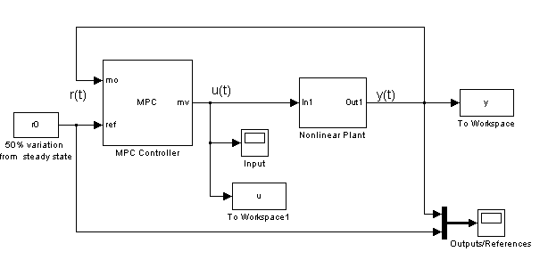
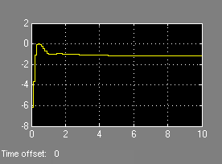
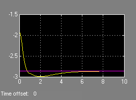
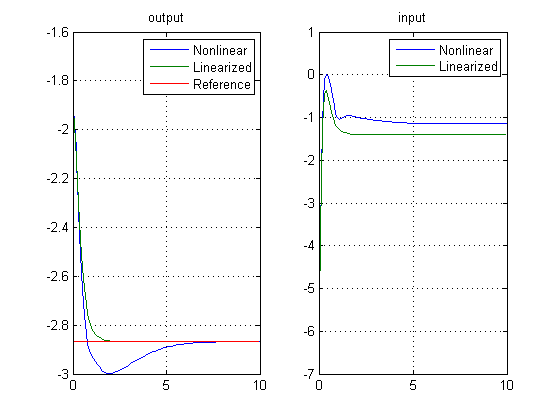

This demonstration shows how to work with offsets in plant models obtained by linearization of nonlinear Simulink models. We consider the MPC control of a MIMO nonlinear system with nonzero offsets at linearization, 3 manipulated variables, 2 measured outputs.
Author: A. Bemporad
The model is described in the Simulink diagram NL_OFFSETS.MDL
Find equilibrium
[x0,u0,y0,dx0]=trim('nl_offsets');
x0 = offset (also used as initial condition)
[A,B,C,D]=linmod('nl_offsets',x0,u0);
sys=ss(A,B,C,D);
Ts=0.1; % Sampling time clear Model Model.Plant=sys; % Plant prediction model Model.Nominal.X=x0; % State vector at linearization Model.Nominal.U=u0; % Input vector at linearization Model.Nominal.Y=y0; % Output vector at linearization Model.Nominal.DX=dx0; % State derivative vector at linearization Model.Noise=0.1; % Output measurement noise model (white noise, zero mean, variance=0.01) p=20; m=3; weights=[]; % use default weights mpc_controller=mpc(Model,Ts,p,m,weights,struct('Max',0.2));
Reference signal for output vector
r0=1.5*y0;
Tstop=10; %Simulation time mpc_offsets sim('mpc_offsets',Tstop)
manipulated
variable
measured output and reference

Tf=round(Tstop/Ts); r=r0*ones(Tf,1); [y1,t1,u1,x1,xmpc1]=sim(mpc_controller,Tf,r);
Plot and compare results
subplot(121) plot(y.time,y.signals.values,t1,y1,t1,r) legend('Nonlinear','Linearized','Reference') title('output') grid subplot(122) plot(u.time,u.signals.values,t1,u1) legend('Nonlinear','Linearized') title('input') grid